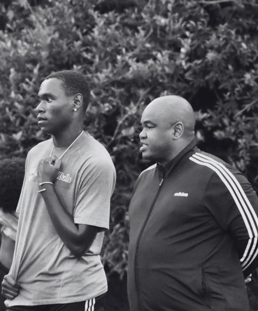

01–03MONTHS
Habits become visible.
Focus, listening, better training behavior, and field awareness begin to change.

The long development route
The process is not a race to the next team, trial, or result. It is the willingness to learn, repeat, listen, improve, and stay connected to humility, effort, ambition, respect, and teamwork.
The development clock
Each stage prepares the next. Progress is measured by what the player can repeat, understand, and transfer to real play.
01–03MONTHS
Focus, listening, better training behavior, and field awareness begin to change.
03–12MONTHS
First touch, positioning, decision-making, and confidence become more consistent.
01–03+YEARS
The game slows down. Leadership, adaptability, and a recognizable football identity emerge.
Why this system
Speed without understanding creates rushed decisions, lost possession, and disconnected teams.
The game is played with understanding. Players learn to scan, recognize the moment, and choose for the good of the team.
We stay with the basics longer because the basics become the difference when the level, speed, and pressure rise.
Confidence, composure, and consistency come through repetition, patience, accountability, and mastery of the details.

The real outcome
“Character is built in the moments no one applauds.”
It is how a player responds after a mistake, handles disappointment, treats teammates, accepts coaching, and continues to work when progress feels slow.
Choose the right demand
Tier 1 and Tier 2 carry the performance pathway. Tier 3 establishes the habits required to enter it.